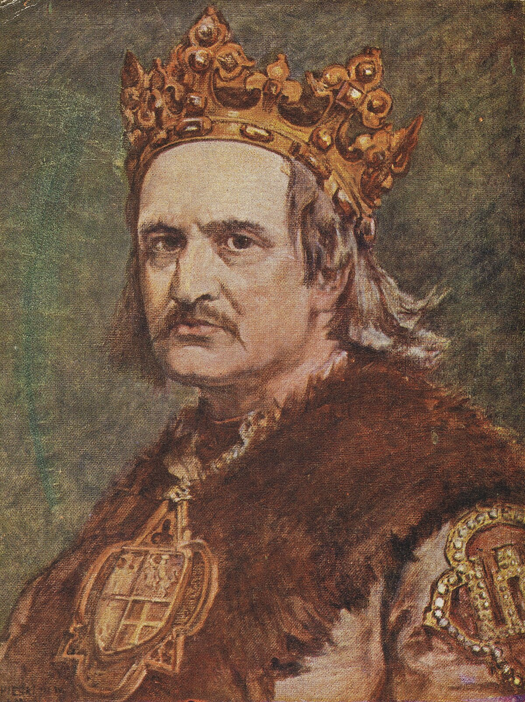
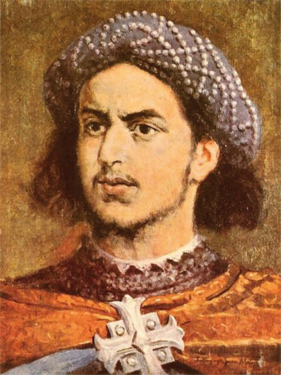
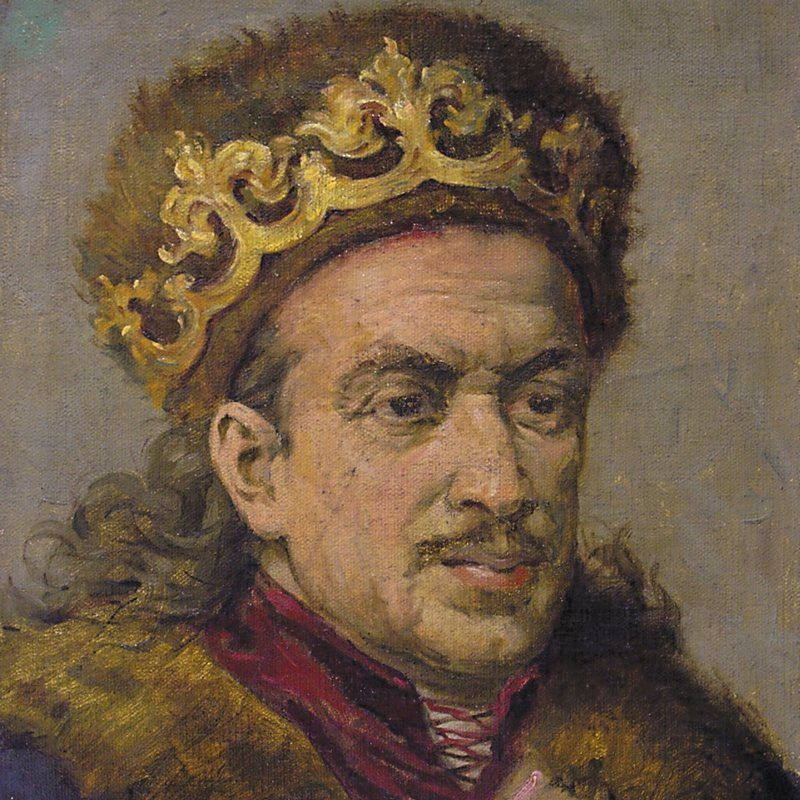
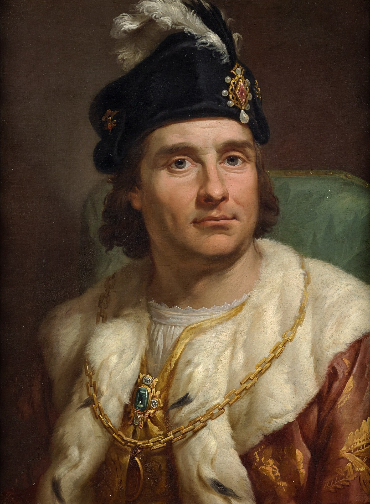
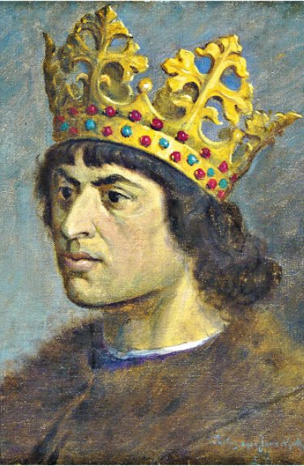
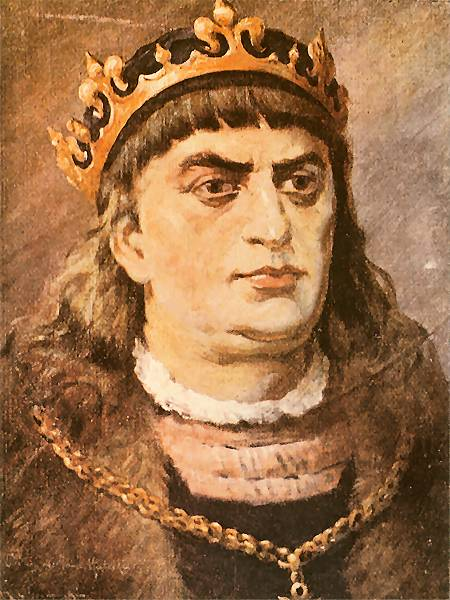
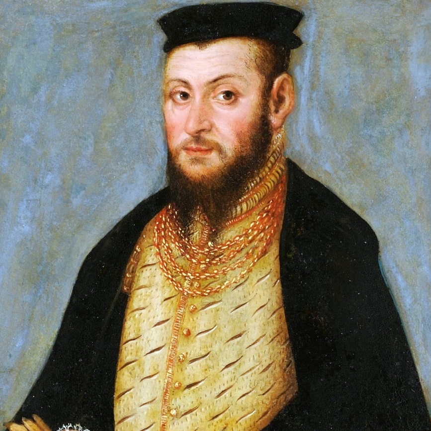
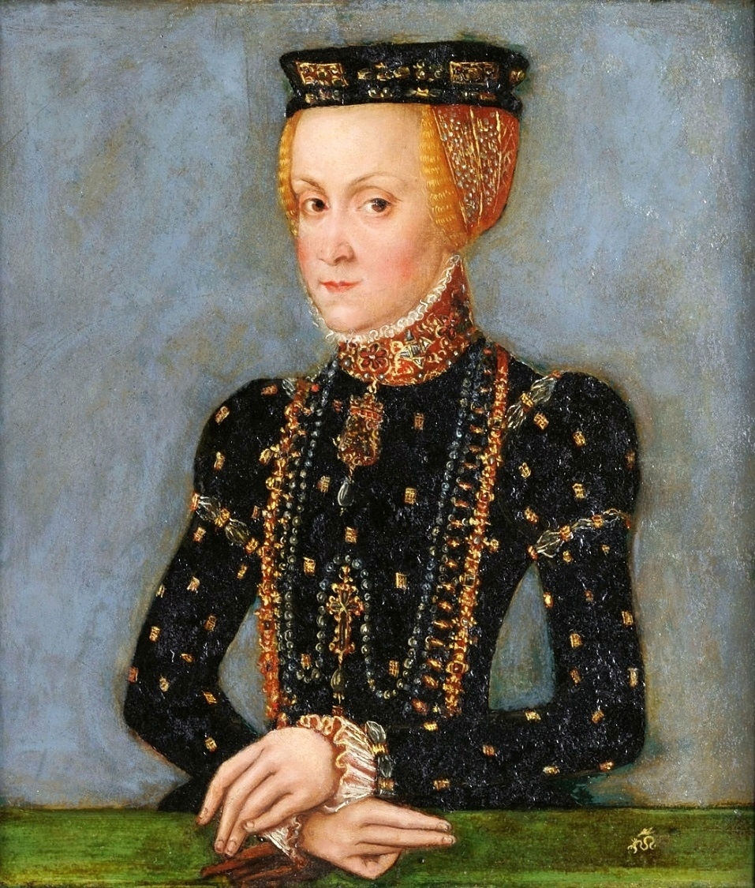

Władysław II Jagiełło
Zobacz opis
Śmierć: 1434
Panowanie: Król Polski (1386–1434), Wielki Książę Litewski (1377–1401)
Najważniejszy czyn: Doprowadzenie Unii Polsko-Litewskiej w Krewie
Ciekawostka: Jagiełło był bardzo czystą i religijną osobą do takiego stopnia że był okres w którym unikał kobiet by przypodobać się Bogu
Panowanie: Król Polski (1386–1434), Wielki Książę Litewski (1377–1401)
Najważniejszy czyn: Doprowadzenie Unii Polsko-Litewskiej w Krewie
Ciekawostka: Jagiełło był bardzo czystą i religijną osobą do takiego stopnia że był okres w którym unikał kobiet by przypodobać się Bogu

Władysław III Warneńczyk
Zobacz opis
Śmierć: 1444
Panowanie: Król Polski (1434–1444), Król Węgier (1440–1444)
Najważniejszy czyn: Udział w bitwie pod warną w 1444r w tym jego śmierć
Ciekawostka: Jego przydomek "Wareńczyk" wziął się od jego miejsca śmierci - Warna
Panowanie: Król Polski (1434–1444), Król Węgier (1440–1444)
Najważniejszy czyn: Udział w bitwie pod warną w 1444r w tym jego śmierć
Ciekawostka: Jego przydomek "Wareńczyk" wziął się od jego miejsca śmierci - Warna


Kazimierz IV Jagiellończyk
Zobacz opis
Śmierć: 1492
Panowanie: Król Polski (1447–1492), Książę Litewski (1440–1492)
Najważniejszy czyn: Pokonanie Zakonu Krzyżackiego i podpisanie pokoju w Toruniu w 1466r
Ciekawostka: Jego Syn Kazimierz został kanonizowany jako święty kazimierz - patron Polski i Litwy
Panowanie: Król Polski (1447–1492), Książę Litewski (1440–1492)
Najważniejszy czyn: Pokonanie Zakonu Krzyżackiego i podpisanie pokoju w Toruniu w 1466r
Ciekawostka: Jego Syn Kazimierz został kanonizowany jako święty kazimierz - patron Polski i Litwy

Jan I Olbracht
Zobacz opis
Śmierć: 1501
Panowanie: Król Polski (1492–1501)
Najważniejszy czyn: Wydanie w 1496 "Statutu Piotrkowskiego" który potwierdza i rozszerza przywileje szlachty
Ciekawostka: W 1496 roku Jan Olbracht podjął nieudaną wyprawę na Mołdawię, utrwaloną w powiedzeniu „za króla Olbrachta wyginęła szlachta”
Panowanie: Król Polski (1492–1501)
Najważniejszy czyn: Wydanie w 1496 "Statutu Piotrkowskiego" który potwierdza i rozszerza przywileje szlachty
Ciekawostka: W 1496 roku Jan Olbracht podjął nieudaną wyprawę na Mołdawię, utrwaloną w powiedzeniu „za króla Olbrachta wyginęła szlachta”

Aleksander Jagiellończyk
Zobacz opis
Śmierć: 1506
Panowanie: Król Polski (1501–1506), Książę Litewski (1492–1501)
Najważniejszy czyn: Ustanowienie "Przywileju Mielnickiego", wydany 25 października 1501 roku w Mielniku, ograniczył władzę królewską na rzecz senatu, w praktyce wprowadzając w Polsce republikę oligarchiczno-arystokratyczną, gdzie król był odwoływalny i przewodniczył senatowi.
Ciekawostka: Jego panowanie było określane jako różnie ocierające, w zależności od tego, czy priorytetyzował polskie interesy.
Panowanie: Król Polski (1501–1506), Książę Litewski (1492–1501)
Najważniejszy czyn: Ustanowienie "Przywileju Mielnickiego", wydany 25 października 1501 roku w Mielniku, ograniczył władzę królewską na rzecz senatu, w praktyce wprowadzając w Polsce republikę oligarchiczno-arystokratyczną, gdzie król był odwoływalny i przewodniczył senatowi.
Ciekawostka: Jego panowanie było określane jako różnie ocierające, w zależności od tego, czy priorytetyzował polskie interesy.

Zygmunt I Stary
Zobacz opis
Śmierć: 1548
Panowanie: król Polski (1507-1548r) i książe Litweski (1506-1548r)
Najważniejszy czyn:Najważniejszym czynnem za który Zygmunt I Stary zasłużył sobie na uznanie, była jego działalność mecenacka i promowanie sztuki renesansowej w Polsce
Ciekawostka: Zygmunt miał bardzo dużą słabość do błaznów w tym Stańczyka
Panowanie: król Polski (1507-1548r) i książe Litweski (1506-1548r)
Najważniejszy czyn:Najważniejszym czynnem za który Zygmunt I Stary zasłużył sobie na uznanie, była jego działalność mecenacka i promowanie sztuki renesansowej w Polsce
Ciekawostka: Zygmunt miał bardzo dużą słabość do błaznów w tym Stańczyka

Zygmunt II August
Zobacz opis
Śmierć: 1572
Panowanie: książe Polski (1548-1572r) i książe Litewski (1529-1548r)
Najważniejszy czyn: Doprowadził do unii realnej pomiędzy Polską i Litwą w 1569r w lublinie (1569)
Ciekawostka: Jego wielką pasją było kolekcjonerstwo: zbierał między innymi zbroje i zdobione armaty.
Panowanie: książe Polski (1548-1572r) i książe Litewski (1529-1548r)
Najważniejszy czyn: Doprowadził do unii realnej pomiędzy Polską i Litwą w 1569r w lublinie (1569)
Ciekawostka: Jego wielką pasją było kolekcjonerstwo: zbierał między innymi zbroje i zdobione armaty.

Anna Jagiellonka
Zobacz opis
Śmierć: 1596
Panowanie: Królowa Polski (1575–1596)
Najważniejszy czyn: Najważniejszym czynem Anny Jagiellonki było jej małżeństwo z królem Stefanem Batorem i jej rola jako królowej Polski, , Anna Jagiellonka formalnie pozostawała królową, ale po śmierci męża nie sprawowała faktycznej władzy.
Ciekawostka: Po jego śmierci doprowadziła do wyboru na króla Polski Zygmunta III Wazy, swojego siostrzeńca
Panowanie: Królowa Polski (1575–1596)
Najważniejszy czyn: Najważniejszym czynem Anny Jagiellonki było jej małżeństwo z królem Stefanem Batorem i jej rola jako królowej Polski, , Anna Jagiellonka formalnie pozostawała królową, ale po śmierci męża nie sprawowała faktycznej władzy.
Ciekawostka: Po jego śmierci doprowadziła do wyboru na króla Polski Zygmunta III Wazy, swojego siostrzeńca
Św. Kazimierz
Zobacz opis
Śmierć: 1484
Panowanie: —
Najważniejszy czyn: Nie był królem i nie panował nad żadnym księstwem - Został kanonizowany na świętego w 1604r, Święty Kazimierz Jagiellończyk jest znany z wyjątkowej pobożności i charyzmatycznego życia, które przyciągało do niego ludzi z różnych warstw społecznych, w tym biednych i chorych.
Ciekawostka: Ciekawe jest to, że mimo swojego królewskiego pochodzenia, Kazimierz prowadził skromny i ascetyczny tryb życia, nosił skromne szaty i był znany z umiarkowania w jedzeniu i piciu, a także z pilnego przestrzegania języka, nigdy nie splamiając swoich ust kłamstwem, obmową lub złem słowem
Panowanie: —
Najważniejszy czyn: Nie był królem i nie panował nad żadnym księstwem - Został kanonizowany na świętego w 1604r, Święty Kazimierz Jagiellończyk jest znany z wyjątkowej pobożności i charyzmatycznego życia, które przyciągało do niego ludzi z różnych warstw społecznych, w tym biednych i chorych.
Ciekawostka: Ciekawe jest to, że mimo swojego królewskiego pochodzenia, Kazimierz prowadził skromny i ascetyczny tryb życia, nosił skromne szaty i był znany z umiarkowania w jedzeniu i piciu, a także z pilnego przestrzegania języka, nigdy nie splamiając swoich ust kłamstwem, obmową lub złem słowem